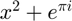
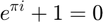

RUKASECOND METHOD
%RK_4_2 Step of 4th order Runge-Kutta algorithm for second order ODE function [ x_it,y_it ] = rukasecond( x, y, t, h, func)
%We need to implement two linked Runge-Kutta algorithms for %1) q'=i %2) ai'+bi+cq=d %which were obtained from the second order ODE: aq"+bq'+cq=d % %The function "func" is obtained from 2) by rearranging: %i'=(1/a)*(d-bi-cq) % %In our code we used x = q and y = i, so that the algorithm can be %used to solve other problems. % %The coefficients for the Runge-Kutta algorithms for % 1) : k_x1, k_x2, k_x3 and k_x4 % 2) : k_y1, k_y2, k_y3 and k_y4 % %Note that for optimizing the code, instead of calling the function %"func" for 1), we call y_i


k_y1=func(x, y, t);
k_x1=y;
k_y2=func(x+0.5*h*k_x1, y+0.5*h*k_y1, t+0.5*h);
k_x2=y+0.5*h*k_y1;
k_y3=func(x+0.5*h*k_x2, y+0.5*h*k_y2, t+0.5*h);
k_x3=y+0.5*h*k_y2;
k_y4=func(x+h*k_x3, y+h*k_y3, t+h);
k_x4=y+h*k_y3;
x_it=x+h*(k_x1+2*(k_x2+k_x3)+k_x4)/6;
y_it=y+h*(k_y1+2*(k_y2+k_y3)+k_y4)/6;
Not enough input arguments.
Error in rukasecond (line 27)
k_y1=func(x, y, t);
end